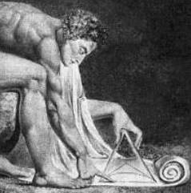

Lógica
 De: La Frikipedia, la enciclopedia extremadamente seria.
De: La Frikipedia, la enciclopedia extremadamente seria.
Dícese del estado omnisciente e impotente del estado cerebral al haber dicho/hecho/realizado algo coherente. Lo lógico es aquello que no es por lo que nosotros nos desentendemos, sino de lo que nosotros entendemos más allá de las espectativas que algún día nos atraerán hacia lo más coherente y lógico que podamos ver y/u/o hablar. Lo lógico es aquello que está muy lejos cerca de La Frikipedia. Es el archienemigo de este paraíso de artículos incoherentes.
 Un individuo con telarañas empleando lógica, luego un individuo con telarañas que no es frikipedista.
Historia de lógica
Al haber leído esta palabra tantas veces ya no sabes de que se trata, e ahí algo lógico. La lógica apareció por primera vez nada más morir cristo, o jesús, o Diox. Cuando murió los romanos empezaron a usar esa cosa viscosa y gelatinosa... grisácea que tenemos dentro del coco. Hacían zumo de coco todos los días con lo que irónicamente fortalecían su coco. Fué entonces cuando empezaron a aparecer los primeros estudios, se empezaron a construir ruedas, armas, cohetes espaciales, 9mm, GPS, etc. Con lo que los primeros que utilizaron su cerebro para algo fueron los grandes conocidos como:

Que
Spock aparezca en éste artículo es algo lógico.
- Einsteintintín: Un viejo, el cuál creó a Frankenstein, a Drácula y a Heidi. Puso su nombre a un elemento, a un átomo, el Einstenio, que en realidad era zumo de plástico potásico, pero le puso ese nombre para vacilar delante de sus amigos.
- Antoñín Marcoñín Perez: El inventor de la radio y de otras muchas cosas.
- Aki, ira, ToMi Llama: Un semidios en potencia de 2. Fué el que le dió vida a Son Goku y toda esa peña que todos conocemos.
- Matt Groening: El dios de los dibujos animados. Fué el que creó a Los Sínson, el que descubrió la pólvora y el que dijo que la Tierra era el centro del universo.
- Gay Leo Gay Lei: También conocido como "El Chiflao", o Galileo Galilei. Fué (o sigue siendo, quién sabe), unos de los más chiflados cibergfilosóficos de la historia del wombat. Fué quién dijo que la Tierra no era el centro del universo, que no, que gira y gira como si de una peonza del chollo se tratase. Matt Groening lo mandó a la horca.
- Steve Vai: Un dios a las 6, 12 y 18 cuedas. Inventó la primera guitarra electrica con 3 mástiles (18 cuerdas). Aunque tiene 40 años, la edad no le pasa factura, y en la mitología afrogriega aparece como Vaiselo, Perseo y Caliseo.
- Hortiga y Gadget: Dos señores "mu" listos (aunque ciertos eruditos afirman que sólo era uno) que descubrieron el perspectivismo. Consistía en averiguar cuál era el mejor punto de vista para verle las bragas a la vecina. Actualmente están detenidos por "voyeurismo"
- Paco Martínez Soria: Fue el impulsor de la actual filosofía en países de tanta relevancia como Tayikistán, Lienchenstein o Namibia. También es considerado uno de los mitos eróticos de la época glaciar. Actualmente está "viejuno", pero se sigue llevando a las suecas de calle. Compartió cama con Leticia Sabater, por el momento, su aprendiz.
La lógica murió hace tiempo gracias a los políticos, a los canis, a los frikis y al desentendimiento del poder anarquista y puliterarista.
Argumentaciones Sofísticas
(en construcción)
Dícese de aquellos argumentos lógisticos incorrectos y verdadermante estúpidos que todo mundo hace sin reparo o miramiento por ende el mundo es ilógico e iremos a chupar pollas a (quién sabe quién) dios de la Lógica. Viene de la plabra sofista que significa en gñapés persona con demasiado tiempo libre. Usese con precaución: Suelen convencer a las masas y algunos frikis.
- Equivoco: Argumentación con mierda de más o simplemente ilógica:
Todo bruce lee es banana
Toda banana es comestible
Luego, todo bruce lee es comestible
- Anfibología: De recurrente aparición en el chat frikipedico, ocurre cuando no sabemos hablar:
- Metáfora: http://www.youtube.com/watch?v=4uKQT-BKzwI
- Círculo Vicioso: Chuck Norris es superior a Diox. ¿Porqué? porque Diox lo dice. ¿Porqué? porque Chuck Norris es superior a Diox ¿Porque? porque Diox lo dice...
Podría seguir pero tengo hueva.
- Ignorancia del Asunto: Bueno este no podría ser http://www.youtube.com/watch?v=4uKQT-BKzwI
Conclusiones lógicas
El mejor poder de la lógica es que nos permite, a partir de ciertos hecho que sabemos que son ciertos obtener nuevos hechos tanto o más ciertos que los primeros. Por ejemplo, puede verse una demostración lógica de por qué el verano es bueno aquí. Algunos otros ejemplos:
- Hace 50 años todo el mundo fumaba. Los que fumaban entonces actualmente son viejos. La esperanza de vida de los actuales viejos a aumentado, luego fumar alarga la vida.
- Los médicos recomiendan un vaso de vino diario para prevenir el cáncer. Luego, si tomamos al menos dos litros diarios de vino, podemos prevenir el cáncer de todo nuestro edificio.
- Si los príncipes de Asturias (que en paz descansen) contrajeron la enfermedad del matrimonio hace tres años, y hasta la fecha han obtenido 2 hijos, de los cuales el 100% son niña, la lógica nos dice en primer lugar, que ya falta poco para que se engendre el tercer feto. En segundo lugar, concluimos en que la velocidad de reproducción de los susodichos, está en 1 hijo por año. Esto significa que dentro de 30 años, tendremos 30 bocas más que alimentar, de estas 30 princesitas, al menos 10 estarían ya en la edad adulta, con lo que además tendríamos 10 princesotes a los que habría que alimentar. Esto 20 matrimonios, a su vez tendrían, en total, 1+2+3+4+5+6+7+8+9+10 = 55 hijos. Conclusión: dentro de 100 años, el 90% de la población española serán herederos directos de la casa real, y el otro 10% tendrán que mantenerlos.
Palabros lógicos
La Lógica, como disciplina reservada que es, se permite el lujo de emplear palabros de su propia cosecha. Algunos ejemplos son los siguientes:
- Sii (si, y sólo si)
- Síí (sí, y sólo sí)
- Een (entonces, y sólo entonces)
- Paa (para, y sólo para)
- Paa´(para qué, y sólo para qué/¿para qué, y sólo para qué?)
- Poo (porque, y sólo porque)
- Poo´(por qué, y sólo por qué/¿por qué, y sólo por qué?)
- Doo (donde, y sólo donde)
- Dóó (dónde, y sólo dónde/¿dónde, y sólo dónde?)
- Cuu (cuando, y sólo cuando)
- Cuu´(cuándo, y sólo cuándo/¿cuándo, y sólo cuándo?)
Caso pluscuamparticular
Lo constituye el LooL, que significa LOL, y sólo LOL.
Ejemplos del uso de la Lógica
Analicemos semantico-lógicmanete lo que pone en la imagen de la izquierda, para ver si tiene o no sentido.
En primer lugar y como curiosidad, a simple vista se trata del sueño de todo anarquista. Sin embargo, si se paran a pensar, ya se está prohibiendo hacer algo, por lo que ellos jamás prohibirían prohibir.
Volviendo al tema que nos interesa, la Lógica, podemos considerar que se trata de una paradoja o de una falacia lógica: ¿Hum?, si prohibir está prohibido, no se puede prohibir prohibir, sin embargo, vamos a demostrar que no es ni la una ni la otra.
Para poder prohibir algo, tiene que estar permitido prohibir. La oración prohibido prohibir implica que:
- antes de enunciarse, estaba permitido prohibir,
- después de enunciarse, no está permitido prohibir.
Luego la oración tiene sentido, c.q.d.
Finalmente, el hecho de prohibir prohibir provoca un aumento de la Entropía similar al de buscar Google en Google, o el de odiar el odio.
La imagen de la derecha se trata de un buen ejemplo del uso de la lógica. Dejamos su análisis para el gilipollas que no tiene nada mejor que hacer lector.
Expreciónes logicas de la lógica tan lógica
- Y bien, doctor, ¿no es cierto que cuando una persona muere durante el sueño, no se entera hasta la mañana siguiente?.
- El hijo más
gay joven, el de veinte años, ¿qué edad tiene?.
- ¿Estaba usted presente cuando se tomó su foto?.
- ¿Estaba usted solo o era el único?.
- ¿Fue usted o su hermano menor quien
fue violado por su mama murió en la guerra?.
- ¿A qué distancia uno del otro estaban los vehículos en el momento de la colisión?.
- Usted estuvo allí hasta que se
corrio con la foto de un travesti marchó, ¿no es cierto?.
- ¿Cuántas veces ha cometido usted
zoofilia suicidio?.
- Ella tuvo tres hijos, ¿cierto?
Sí.
¿Cuántos fueron varones?
Ninguno.
¿Hubo alguna mujer?.
- ¿Está usted cualificado para proporcionar una muestra de orina?
Lo he estado desde mi más tierna infancia.
- Doctor, antes de realizar la autopsia, ¿verificó si había pulso?
No.
¿Verificó la presión sanguínea?
No.
Entonces, ¿es posible que el paciente estuviera vivo cuando usted comenzó la autopsia?
No.
¿Cómo puede estar usted tan seguro, doctor?
Porque su cerebro estaba sobre mi mesa, en un tarro.
Pero, ¿podría, no obstante, haber estado aún vivo el paciente?
Es posible que hubiera estado vivo y ejerciendo de capullo abogado en alguna parte.
Un ejemplo real de logica puta pura
si p->q, luego p condicional de q
si hay p hay q
si ""p ""q , luego si no hay p no hay q TOTALMENTE FALSO
si hay q hay p TOTALMENTE FALSO
Obtenido de tdc 1BI alfonsox el sabio Murcia, enero 2009
Paranoias como esta se dan lugar a diario en la logica por eso muy pocas personas
son capaces de entender la logica:
Quién usa la lógica
Quienes no usan la lógica
- Bill Gates.
- Los politicos.
- Los monjes tibetanos del norte de Aspaña.
- Los religiosos.
- Los frikis.
- IP anónima
Véase también
Autor(es):
- Aque
- Viento
- El Xarlie
- Azulejos
- El Sevillano
- Turi
- Cibercrank
- Mad Max
- Veni Vidi Vici
- Dark temptation
Frikipedia 2005-2016, Licencia
GFDL 1.2 - Extraído por FrikiLeaks
 Ciencias
Ciencias